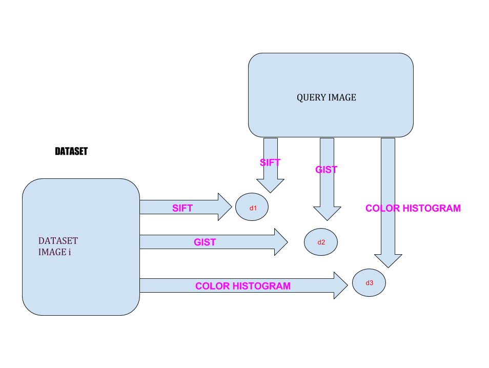
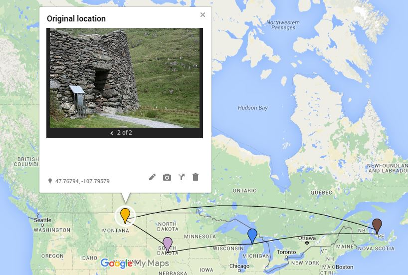
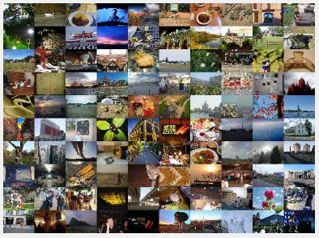
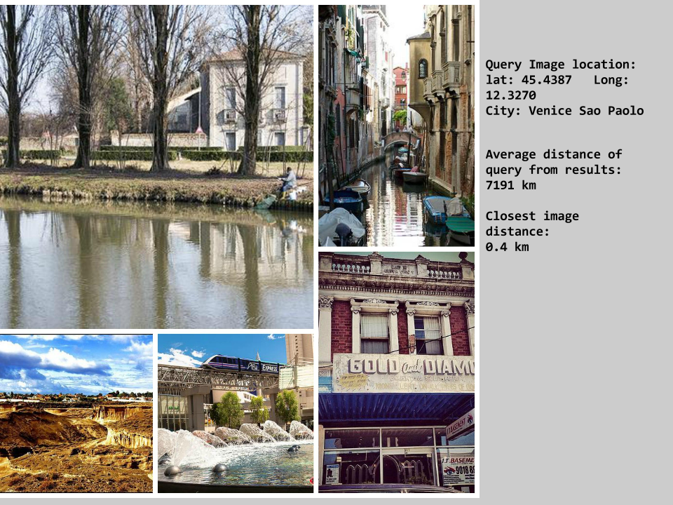
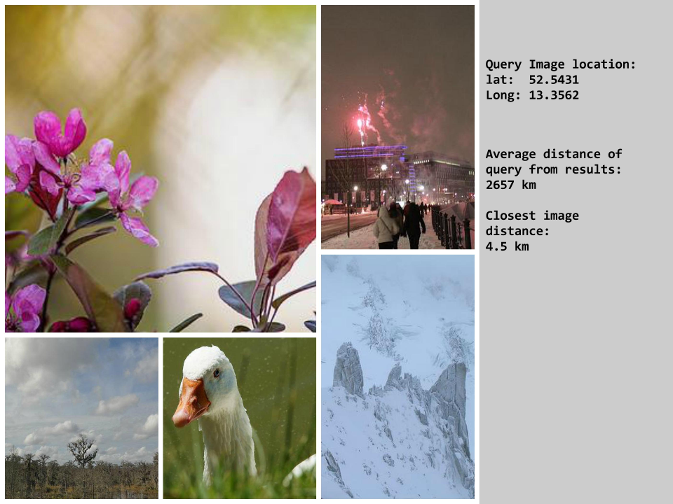
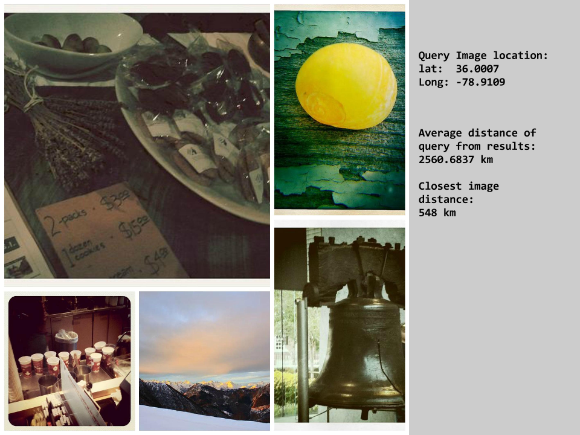

Estimating GPS coordinates from an image
Sneha MehtaFall 2015 ECE 5554/4984 Computer Vision: Class Project
Virginia Tech
Abstract
Estimating geographic location from an image is a challenging computer vision problem that researchers have studied for a while now. Such systems typically extract visual features from the image in question and find the corresponding images from the database with matching features. A common assumption in such systems is that images that look similar must be co-located. While this is true for images containing outdoor scenes and famous monuments and buildings, the assumption does not hold up when the image contains indoor scenes or face closeups. In this project we have developed an application that lets users upload an image, and returns those images that are geographically close to the query image in distance. Moreover, it displays a google map with the location of the returned images specified with markers. We let the users take over from this point onwards to predict the exact location. In essense, computer vision techniques help to narrow-down the search space from the entire surface of the earth to a relatively smaller area.Teaser figure


Introduction
Estimating geographic location from an image is an exciting problem because people have achieved high test accuracy only on highly tailored datasets. For example in [1] they have removed all the images from the dataset that are not indicative of the location. In other words, they have removed indoor scenes and photos with people as the main focus. In [2] they try to estimate the location of a photo picked from a photo burst. They use HMM's on the timestamps of the neighboring images and try to predict the location.Being able to GPS tag any arbitrary image presents exciting possibilities. To start with, there are a number of untagged images on smartphones. Imagine you want to find out where a very old random image was taken. For example I found this image on my phone:

Approach
For this task we picked 3000 images from the Yahoo Flickr creative commons, YFCC100M dataset. The dataset was downloaded from the Mediaeval Placing task website. All the photos in the dataset are identified by an MD5 hash and hash to flickr photo identifier mapping is provided. Using this mapping we queried the flickr API to get the metadata about the image. The metadata we were interested in was the timestamp, country and latitude and longitude of an image. Now for a query image we run it through the image retrieval pipeline described below which returned the 5 topmost similar images. Then we post-processed the results to keep only those images which were expected to lie close to the query image geographically. Remember, the aim of the application is to narrow down the search space for the query image from the vast set containing any point on the surfae of the earth to only a city or a country or as close as we can get. So the most natural choices were the timestamp and the country metadata that we had. The YFCC100M dataset contains collections of photos by a number of tourists while travelling a particular city. The photos are organised in sessions. A session is a series of photos taken by a toursit while travelling within a city in a 24-hour time period. So assuming our sample database contains a good number of images from one or more these sessions, it is only natural that we use timestamps of images to filter the results. So from the results we keep only those which are taken within a day of the query image. It is of course possible that our dataset contains images that match the timestamp criteria but do not lie within the same country as query, so we compare the countries of the results and query and keep only those images which match the country. But for this approach to work the dataset must contain a lot of images from one or more sessions.The image retrieval pipeline:
We follow a standard approach for content-based image retrieval, that involves extracting features from the query image and the dataset images and computing distances between query features and the dataset features in that feature space. The features we have picked are SIFT, GIST and color-histogram. Each of these is described below. Additionally we also tried to estimate which feature performs the best, in the sense which feature is more responsible for returning images closest to the query distance-wise.
SIFT:
Scale invariant feature transform is a popular choice in image retrieval systems. It works particularly well for our system because a lot of the images in the dataset represent indoor scenes. Local feature matching does a good job in such situations. We have used a bag-of-words model to do feature matching. From the database images we extract 128 dimensional SIFT features. k-means clustering is performed on these features to give 1500 cluster centers. The number of centers were picked experimentally. Then for each image the features are classified to belong to one of the cluster centers and a 1x1500 image histogram is computed. This is done for all images in the dataset and also the query image. Finally, for retrieval, cosine similarity is computed between the query and all of the database images and images with top 5 similarity scores are returned.
GIST: GIST considers the global features of the image or its spatial properties. I used Computer Vision Feature Extraction toolbox to extract a 512 dimensional GIST descriptor for each of the dataset images and the query image. Later I computed Euclidean distance between query and all the dataset images and the closest 5 were returned.
Color Histogram: Color histogram is an easy to compute and a popular feature in image retrieval systems. First the image was converted into HSV space. Then it is color quantized in the Hue channel into 15 colors using kmeans clustering. After that I built a 256 dimensional color histogram. This was done for all images and euclidean distance was computed between query and the dataset.
All of the features above individually gave varying results with SIFT outperforming both GIST and Color histogram. Now we wanted to know if there are performance improvements if we combine all features together. So we calculated similarity of each image with the query image in the SIFT space and converted it into distance. We also calculated distances in the GIST and the color-histogram spaces of the query from the dataset. This gave us three distance vectors of the length of size of dataset. We aggregated the 3 distances and sorted the results to get the topmost 5 results. The performance improved slightly. But we are positive that results would have been much better if we had used a larger dataset.
Measuring Performance: The ultimate measure of performance that we are estimating here is how close are the returned images to the query image. To see the kind of results we get we ran all images through the system, and measured the haversine distance between the coordinates of the query image and the coordinates of the top five results. Then we averaged these distances. The smaller the distance the better.
Experiments and results
We started with a subset of 980 images from YFCC100M dataset. Then for each of the training images we measured the average distance of the returned images from the query image in SIFT, GIST and color-histogram spaces. The results for SIFT, GIST and color-histogram were 7191 km, 2657 km and 2560 km respectively. But these figures aren't particularly indicative of effectiveness of the corresponding features. For this to be more effective the dataset must contain a good number of images from each session. But we were limited by availibility of computational resources. We expanded our dataset to contain as many as 3000 images from YFCC100M, but as expected didn't see a significant jump in performance.

Qualitative results
Below we show results for individual features SIFT, GIST and color histogram in that order. Note that these images were training images since only then is it possible to compute the haversine distance.



References
[1] Im2gps: estimating geographic images from single images: J Hays, A Efros - Computer Vision and Pattern Recognition (CVPR), 2008[2] Clues from the beaten path: Location estimation with bursty sequences of tourist photos CY Chen, K Grauman - Computer Vision and Pattern Recognition, 2011